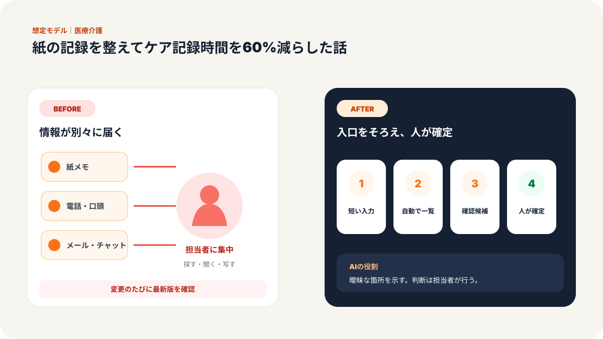
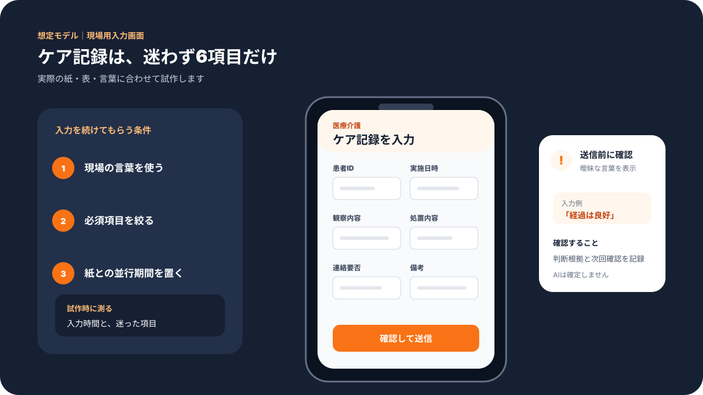
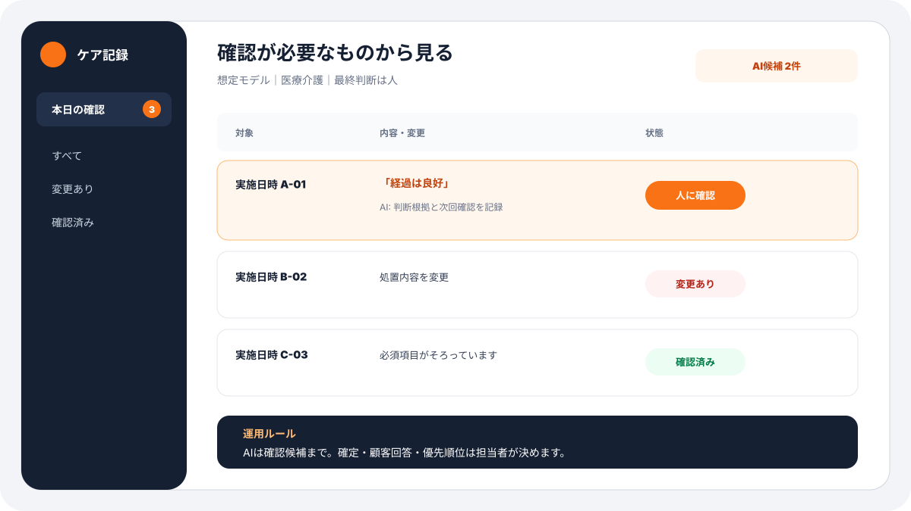
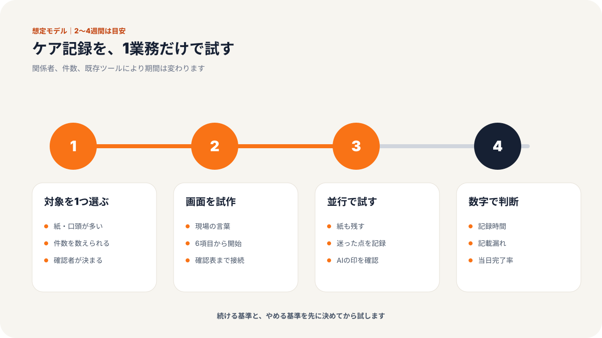
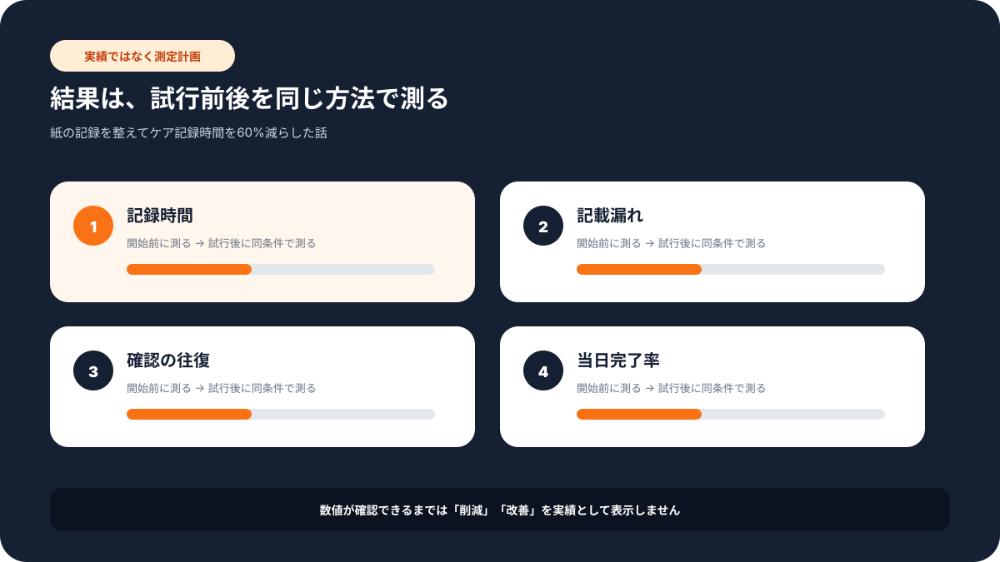

現場での使い方
この記事で変わる業務の流れ
「誰が入力し、誰が確認するか」までイメージできるよう、想定画面と導入手順をまとめています。





# 従業員15名の個人クリニック／紙の記録を整えてケア記録時間を60%減らした話
> 医療・介護・福祉業 × 介護スタッフ × 従業員15名の個人クリニックの事例
課題：紙の記録が増えすぎて、利用者さんを見る時間が削られていた
関西の個人クリニックで、介護スタッフの方から相談を受けました。
最初に言われたのは、こういう一言でした。
「記録を書くために残っている時間が長くて、本来見たいところを見られていない気がします」
現場では、診療記録、ケア記録、問診メモ、予約状況、利用者さんごとの注意点が紙とファイルで分かれていました。長年その形で回っていたため、誰も「仕組みが悪い」とは言いません。ただ、利用者数が増えるにつれて、記録の量も検索の時間も増えていました。
特に負担になっていたのは、1日の終わりに行う記録作成です。紙に書いたメモを見ながら、別の帳票へ転記する。必要があれば過去の記録を探す。ケアプランを作る時には、さらに別のファイルから情報を拾う。1つひとつは小さな作業ですが、毎日積み重なると大きな時間になります。
導入前の状態を整理すると、次のような状況でした。
| 業務 | Before |
|------|--------|
| 記録作成 | 1日あたり約2.5時間 |
| 利用者情報の検索 | 1回あたり約10分 |
| ケアプラン作成 | 1件あたり約10時間 |
| 職員満足度 | 65%前後 |
現場の方は「紙の方が安心」という気持ちもありました。医療・介護の現場では、記録は単なる事務作業ではありません。利用者さんの状態を引き継ぎ、安全に関わる大事な情報です。だからこそ、いきなり全部をAIに任せるような進め方はしませんでした。
まず必要だったのは、紙をなくすことではなく、紙に散らばっていた情報を見つけやすくすることでした。
施策：入力する画面を作り、記録が自動でまとまる流れにした
今回行ったことは、大きく3つです。
ステップ1: 紙の記録項目を、入力する画面に置き換えた
最初に、現場で使っている紙の記録用紙を見せてもらいました。
氏名、日付、体調、食事、服薬、申し送り、気になった点。項目自体は難しくありません。ただ、人によって書き方が違い、あとで探しにくい状態でした。
そこで、紙の内容をそのまま「入力する画面」に置き換えました。スタッフがスマートフォンやパソコンから入力できる形にして、選択式にできる項目は選択式にしました。
たとえば、体調は「良好」「少し不安」「要確認」のように選べるようにしました。自由記述は残しましたが、全部を文章で書かなくても済むようにしました。
ここで大事にしたのは、現場の言葉を変えすぎないことです。急に専門的な管理画面にすると、使われません。紙に近い並びで、必要なところだけ入力しやすくしました。
ステップ2: スプレッドシートを自動で動かす仕組みに集めた
入力された内容は、スプレッドシートに自動で集まるようにしました。
「スプレッドシートを自動で動かす仕組み」を使い、日付ごと、利用者さんごと、担当者ごとに見られるように整理しました。これにより、過去の記録を探す時に紙ファイルをめくる必要が減りました。
スタッフの方からは、導入初週にこう言われました。
「検索できるだけで、こんなに気持ちが楽になるんですね」
この言葉が印象的でした。AIを入れる前に、まず検索できる状態にする。これだけでも効果は大きいです。
ステップ3: AIへの指示文を整え、記録案とケアプラン案を作れるようにした
最後に、AIを使って記録案やケアプラン案を整える流れを作りました。
ただし、AIに医療判断を任せたわけではありません。入力されたメモを読みやすい文章に整える。過去記録をもとに、確認すべき点を洗い出す。ケアプラン作成時のたたき台を作る。役割はここまでです。
たとえば、スタッフが短く入力した申し送りを、AIが「今日の様子」「前回からの変化」「次回確認したいこと」に分けます。最終確認は必ず人間が行います。
医療・介護の現場では、ここが重要です。AIは便利ですが、責任を持つのは現場の人です。そのため、画面にも「AI案は必ず確認してから使う」という運用ルールを入れました。
成果：記録時間は2.5時間から60分へ、検索も10分から3分へ
3か月ほど運用した後、現場の数値を確認しました。
| 項目 | Before | After | 変化 |
|------|--------|-------|------|
| 記録作成時間 | 1日2.5時間 | 1日60分 | 約60%削減 |
| 利用者情報検索 | 10分 | 3分 | 約75%短縮 |
| ケアプラン作成 | 10時間 | 5時間 | 約50%短縮 |
| 利用者満足度 | 80% | 95% | 15ポイント向上 |
| 職員満足度 | 65% | 85% | 20ポイント向上 |
数字として一番大きかったのは記録時間の削減です。これまで終業後に残って書いていた記録が、日中のすき間時間で入力できるようになりました。
ただ、現場の方が一番喜んでいたのは別の点でした。
「利用者さんの前で、前回の情報をすぐ確認できるようになったのが助かります」
紙の記録では、必要な情報がどこにあるかを覚えている人に頼りがちでした。入力画面と検索の仕組みにしたことで、新人スタッフでも過去の注意点を確認しやすくなりました。
副次的な効果として、申し送りの質も上がりました。選択式の項目があるため、書き漏れが減ります。自由記述だけに頼らないので、人によるばらつきも小さくなります。
なぜ効果が出たか：AIの前に、記録の置き場所を整えたから
今回のポイントは、最初からAIを前面に出さなかったことです。
「AIで記録を全部自動化しましょう」と言うと、現場は不安になります。医療・介護の現場では、記録の間違いが利用者さんの安全に関わるからです。
そこで、まず紙の項目を整理しました。次に、入力する画面を作りました。その後、情報が自動でたまる場所を整えました。最後に、AIへの指示文を使って文章整理を支援しました。
順番を守ったことが、定着につながりました。
特に中小規模のクリニックや福祉事業所では、高額な専用システムをいきなり入れるより、今の業務に近い形で小さく始める方がうまくいくことがあります。
今回も、月予算6万円程度の範囲で、まず現場が毎日使える形を優先しました。画面を増やしすぎず、入力項目を増やしすぎず、「これなら使える」と言ってもらえるところから始めています。
他の業種でも応用できること
この事例は医療・介護の現場ですが、同じ考え方は他の業種にも応用できます。
- 保育園: 園児の体調記録、保護者連絡、引き継ぎメモ
- 整骨院: 施術記録、次回確認事項、予約情報
- 訪問サービス: 訪問記録、写真、申し送り
- 小規模店舗: 顧客メモ、予約履歴、クレーム対応
共通しているのは、紙や口頭で残っている情報を、あとで探せる形にすることです。
AIは、その後で十分です。まず情報をためる場所を作り、入力しやすくし、確認しやすくする。AIは文章を整えたり、抜け漏れを見つけたりする役割で使うと、現場に受け入れられやすくなります。
まとめ：記録を減らすのではなく、探す時間と書き直す時間を減らす
記録業務は、なくせない業務です。
特に医療・介護の現場では、記録そのものが安全と品質を支えています。だからこそ、単純に「記録を短くする」だけでは不十分です。
大事なのは、同じ内容を何度も書かないこと。必要な情報をすぐ探せること。AIが作った案を人間が確認できること。
この3つが揃うと、現場の負担は大きく変わります。
気になる業務があれば、お気軽にお声がけください。
弊社では中小企業のAI活用・システム開発の伴走支援を行っています。